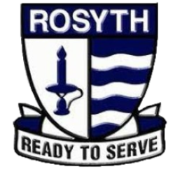
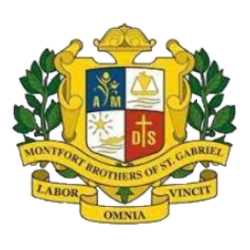

Primary: Rosyth Primary School
Location:
21 Serangoon North Ave 4, Singapore 555855
Description:
Rosyth School was established in 1956. Over the years, it has been recognised for its holistic development and character-building of its students. At the end of 1983, it was selected as one of the two primary schools to host the Gifted Education Programme.
Leadership Position:
Trumpet Section Leader of the Symphony Band
Awards:
SYF Accomplishment (for the school band)
I-CARE Champion (For helping to prevent and assist in a bullying case)

Secondary: Montfort Secondary School
Location:
50 Hougang Ave 8, Singapore 538785
Description:
Montfort Secondary School is a Catholic school in Hougang, Singapore. Founded in 1916, it is a government-aided secondary education all-boys school. It is one of the seven institutions governed by St Gabriel's Foundation
Leadership Position:
Band Major (Military Band)
Alpha Leader (Healping in organising the sceondary one orientation)
Class Vice-Chairman
Awards:
SYF Distinction x 2 (for the school band)
Multiple Hackathon Certifications

Tertiary: Nanyang Polytechnic
Location
180 Ang Mo Kio Ave 8, Singapore 569830
Description:
Nanyang Polytechnic is a post-secondary education institution and statutory board under the purview of the Ministry of Education in Singapore. Established in 1992, NYP is renowned for its digital media, infocomm, and nursing programmes
Leadership Position:
Peer Supporter
Class Vice-President
Awards:
Directors List x 2